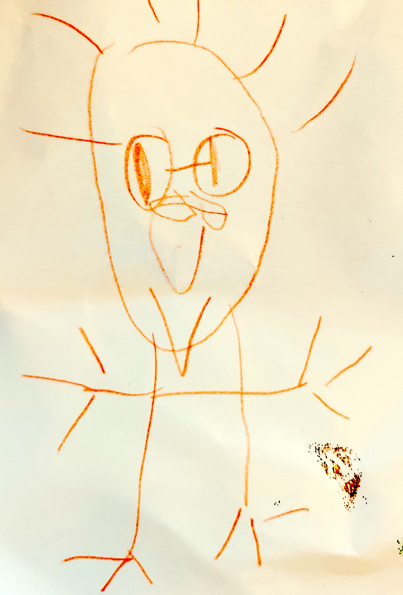

Ivo Dell'AmbrogioHome | Teaching | Research | Publications | Collaborators | Meetings |
(last change: 2025/07/25) |
|
I am a professor of mathematics at the Laboratoire de mathématiques de Lens of the Université d'Artois. Between 2012 and 2024 I was a maître de conférences (associate professor) at the Laboratoire Paul Painlevé of the University of Lille.
I am currently a member of the research networks RT2171 Topologie algébrique et géométrique and IRN Arithmetic & Homotopic Galois Theory; previously member of GDR 2875, ANR ChroK, and DFG SPP 1388 Representation theory. ivo.dellambrogio(snail)univ-artois.fr
Laboratoire de Mathématiques de Lens |
 |
Lens algebra-geometry seminar Lens IA Lille topology seminar FMHF ArXiv MathSciNet zbMATH portail M4TH FDList ChroK GDR 2875 AHGT BIREP seminar MathOverflow nLab The n-Category Café thecostofknowledge |